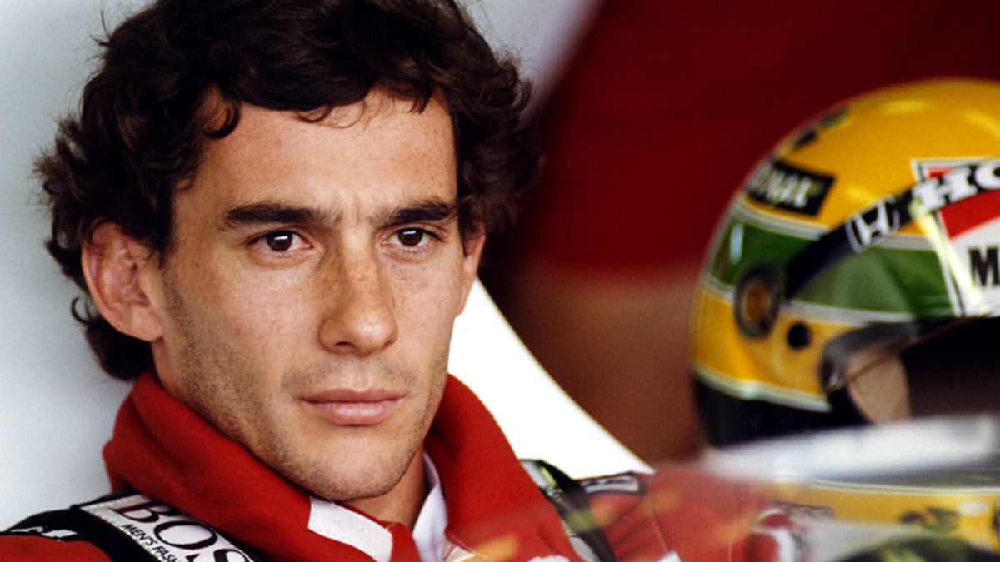

Ayrton Senna
21/03/1966 - 01/05/1994
Pitolo brasileiro de Fórmula 1

Ayrton Senna da Silva, ou simplesmente Senna, foi um piloto de Fórmula 1 das décadas de 80 e 90 e maior ídolo brasileiro do automobilismo. Nasceu em São Paulo, no dia 21 de março de 1960, e morreu de maneira trágica em 1º de maio de 1994, após colidir com uma mureta de proteção no Grande Prêmio de San Marino, em Ímola. Seu velório foi um dos mais marcantes da história do Brasil, durou cerca de 22 horas e foi acompanhado por aproximadamente 240 mil pessoas.